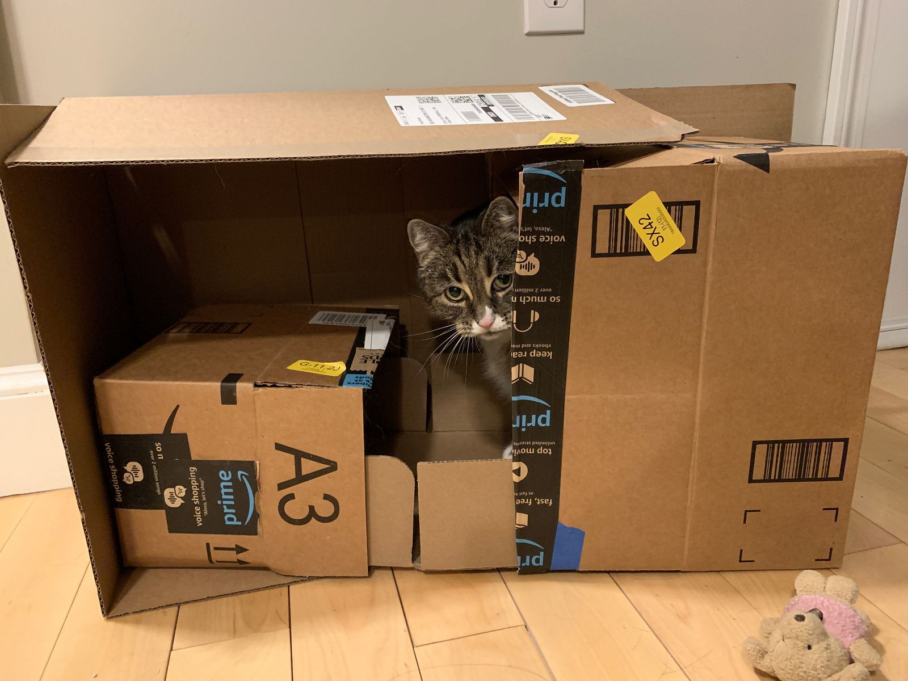

Delayed
My redeye flight to Boston, originally scheduled to depart at 11:51pm, is no delayed to 1:41am. So I have quite a bit of time on my hands right now.
Returning the rental car was easy. I clocked 2,288 miles from Palm Springs down to San Diego and then up to Seattle.
Seattle's airport is poorly organized and in desperate need of a renovation. But at least there's free wifi.
As I drove out of the city to the airport, it hit me that my trip is basically over. I have done a lot. I skied Tahoe. I walked San Francisco. I drank my way through Napa and Sonoma. I hiked Joshua Tree. I got dinner in Mexico. I drove the historic 101 through Southern California from San Diego to the Bay Area, cruising through LA, Malibu, and Santa Barbara. I took some detours in Solvang and Grants Pass. I drove the winding roads of Big Sur and paid $6.60 per gallon for gas. I spent two nights in a cabin in the forest, a 0.25 mile hike from the road with no cell service and no internet access. I biked the 17 Mile Drive in Monterey. I survived several solo hikes in Big Sur, Point Reyes, and the Redwoods despite signs warning me of bears and mountain lions. As the weather turned colder and rainier, I reflected during the long solo journey from San Francisco to Portland. I saw many great sunsets. I stayed in a Yurt with no running water for three nights and was subsequently blown away by the hugeness of Seattle. I ate ice cream (almost) every day.
For my west coast adventure, I tried to jam three types of trip into one: solo driving the pacific coast highway, spending time with friends and family, and exploring nature. With any one on its own, three weeks would have been sufficient, rather than the five and a half that I took. Though it sometimes felt choppy to transition between these types of travel, packing all three into one trip allowed me to fill these five plus weeks easily.
As I prepare to head to Boston, I have a sense of excitement. Despite the fun I have had, I am ready to go home. With this sort of travel, I often feel aimless, always going from one thing to the next with little focus. At home I can feel settled. It's still another two weeks until I return to work, but I am looking forward to that as well. I haven't been committed to anything here on the west coast for more than a few days. Being settled in a routine at home means I can dedicate myself to longer endeavors, work being one of them.
Through all of this, the best part of the trip has been reconnecting with friends, spending time with family, and meeting new people. In these posts, I haven't talked too much about how I spent my time with friends and family. These things don't translate too well into words and they wouldn't make much sense to an outsider even if they did. So if we crossed paths during my travel, thank you for sharing your time with me. I enjoyed it more than anything else on this trip.
To end this post, I share several things that I have learned during my travels:
- AT&T doesn't have great coverage on the pacific coast.
- Boston doesn't have good Mexican food, but Central and Southern California have great Mexican food.
- Los Angeles is big.
- The coastal mountains and forests are beautiful.
- Sharing dessert is a good way to make friends.
- Produce is significantly better in Southern California up through the SF Bay Area. My diet got notably worse north of Marin County.
- Star Wars soundtracks are excellent musical companions while driving the coastal highway.
- Bed and Breakfasts are better than hotels, but sometimes the isolation of a hotel can be good.
- Checking the weather forecast in the Pacific Northwest in April is generally an exercise in futility. On any given day it will likely be cloudy and rain for a bit. Always have a raincoat.
- Driving for more than four hours in a day is exhausting.
